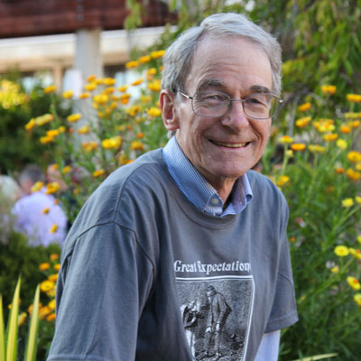

Stories

Welcoming those who have served
In 14 years with the U.S. Marine Corps, Angela Austin's most physically challenging, rewarding, and enjoyable duty was as a Marine Corps martial arts instructor.

A playhouse like no other
Search anywhere and you won’t find anything quite like UCSC’s International Playhouse, an annual program of short theater pieces staged in different languages by students in the university’s Language Program.
-
Why do I give to UC Santa Cruz?
Giving can transform lives, advance research, and protect and enhance the treasures on the UC Santa Cruz campus.

Restoring quarry glory
A proud UCSC alumnus wants to see a campus landmark come to life once more.
- 
A tale of generosities
Lovers of Charles Dickens' books have stepped forward to sustain the Dickens Project, and the famous annual Dickens Universe conference.

Protecting the land. Preserving a legacy
A $2 million gift from the David and Lucile Packard Foundation honors the memory of Ken Norris, while helping to ensure that UCSC remains a leader in natural history programs.
-
Lending a hand by lending books
A generous grandmother inspired three of her grandkids to "pay it forward" and help low-income students get the books they need.
-
Choosing a different path: meet Meka Williams
Student Meka Williams's fierce determination to succeed—along with help from campus and private support programs—diverted her from a potentially grim future.
-
Way beyond a job
UCSC's unique and groundbreaking Academic Excellence program has supported thousands of students since it started in 1986.
-
Sparking a relationship between art and science
With their $1 million kick-off gift, Patricia and Rowland Rebele are helping to make into reality the highly anticipated Institute of the Arts and Sciences.
-
Honoring a 'quietly incredible woman'
When alumnus Mark Headley and his wife, Christina Pehl, decided to make a gift establishing a new endowed chair at UCSC, they wanted to commemorate an extraordinary woman who worked tirelessly for four University of California presidents.
-
Gabe Zimmerman's memory lives on in scholarship
Student Carson Watts was the second winner of the Gabriel Zimmerman Memorial Scholarship, which supports students who are passionate about social issues and committed to public service.
-
Child's play = new research
A $165,000 grant to UCSC's Early Education Services has enabled the program to extend childcare hours for students' children and provide an observation room for developmental psychology research.
-
Giving back by paying forward
Karen Rhodes and her husband, fellow Slug Robert Weiner, have been consistent, reliable donors to UC Santa Cruz, providing valuable support for Cowell College, the History Department, scholarships, and more.
-
Beyond the comfort zone
With the help of an Irwin Project Grant, which funds student art projects on campus, art and psychology major Josh Katz launched a new trajectory of art-making.
-
Honoring outstanding teaching in the humanities
The Dizikes teaching award—named for professor emeritus of American studies John Dizikes—celebrates the Humanities faculty's commitment to excellence in teaching and its impact on undergraduate students.